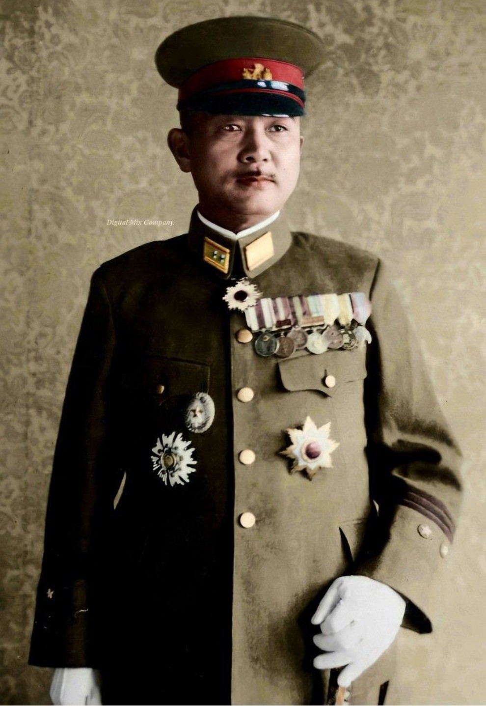

Nom : Tadamichi Kuribayashi
Dates : 7 juillet 1891 – 26 mars 1945
Nationalité : Japonaise
Tadamichi Kuribayashi est l’un des officiers les plus respectés de l’armée impériale japonaise. Connu pour son intelligence, son pragmatisme et son sens du devoir, il est surtout célèbre pour avoir dirigé la défense d’Iwo Jima, l’une des batailles les plus violentes du Pacifique.
Nommé commandant de la garnison d’Iwo Jima en 1944, Kuribayashi comprend immédiatement que l’île ne peut pas être sauvée. Il abandonne les tactiques traditionnelles japonaises et conçoit une défense entièrement nouvelle : positions enterrées, tunnels, bunkers, mobilité souterraine, interdiction des charges suicides.
Sa stratégie transforme Iwo Jima en un champ de bataille d’une intensité exceptionnelle. Malgré l’absence de renforts, il tient plus d’un mois face à une puissance de feu américaine écrasante.
Kuribayashi est considéré comme l’un des meilleurs stratèges défensifs du Japon. Sa résistance à Iwo Jima a marqué l’histoire militaire et reste étudiée dans les écoles de guerre. Son héritage est celui d’un officier lucide, discipliné et profondément attaché à ses hommes.